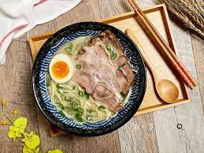

Tonkotsu Ramen
Method
- Wash the bones in cold water with clean brush to remove blood. Put the bones in a strainer to drain the excess water.
- In a large pot, add water, bones and kombu. Measure the distance from the top of the pot to the top of the water, make a note of this ‘original water level’.
- Cook over high heat to bring to a boil and keep boiling. Stir the stock with a long wooden spatula, scrape the bottom to prevent it from burning and to bring the scams to the surface. Skim the scams until they stop appearing.
- Keep boiling the stock for 4 hours, maintain the ‘original water level’ on (2) by periodically topping up the water so it remains the same. Stir the bottom of the pot to prevent it from burning.
- When the stock becomes milky and thicker after 4 hours, start reducing the stock. Do not add the water anymore. This is a process of thickening the stock by reduction. Keep boiling the stock until the volume is reduced to about half. During this phase, stirring frequently by scraping the bottom of the pot with the spatula as it can be burnt easily.
- Turn off the heat, pour the stock over a strainer to another clean pot. In order to maintain the quality of the stock, it is advisable to cool it rapidly by putting the bottom of the pot into a pool of cold water. Keep the stock in the fridge if stored overnight.
Aroma Oil
- Cut the pork back fat into small chunks.
- In a saucepan, add the pork back fat and cook over low heat until melted. It should take about an hour. Take care not to burn the oil.
- Pour the oil over a strainer into another saucepan. Discard the leftover dry pork fat. Add minced pork and minced garlic to the oil, cook over medium heat until the temperature reaches 135°C. Turn off the heat, leave to rest.
Char Shu Pork
- Add pork and water in a saucepan, ensure the pork is submerged under the water. Cook over high heat for about 1 hour. If possible, use a meat probe and cook until the core of the pork reaches 70°C.
- While cooking the pork, prepare a marinade. Add soy sauce, Honteri, sugar, garlic, ginger and chilli in a saucepan.
- When the pork belly is cooked. Add 400ml of the pork cooking water to the marinade. Heat the marinade over low heat, stir to dissolve sugar. Add the pork belly, cook over low heat for an hour. Keep the pork submerged under the sauce. Alternatively, cook at 70°C in sous vide in a sealed bag.
- Keep the pork in the marinade in a Ziploc bag, remove air from the bag. Store in the fridge overnight.
Ramen Egg
- Take out the eggs from the fridge at least 4 hours before cooking to acclimatise the egg.
- In a saucepan, boil enough water to cover the egg.
- Cook the eggs for 6.5 minutes.
- Cool the eggs immediately under cold running water for 1-2 minutes. Peel the shell straightaway.
- Pour the leftover Pork Char Shu marinade into a small pot or a clean ziplock bag and add the egg. Remove the air from the bag before sealing. Leave in the fridge for an hour.
Tonkotsu Ramen Preparation
- Heat 300g Tonkotsu stock over low- medium heat. Take care not to boil.
- In a ramen bowl, add soy sauce, Honteri, salt and minced garlic. Mix well.
- Cook the ramen noodles according to the recipe provided. We have used wholewheat noodles for added nourishment, but any standard ramen noodle with do.
- Pour a hot soup (1) into a bowl of condiments (2), mix well. Add the freshly cooked ramen noodle to the soup.
- Pour 2 tablespoons of the aroma oil onto the soup.
- Add 1-3 slices of pork char shu and the halved ramen egg on top of the noodle, sprinkle fine chopped spring onions and scatter chilli oil to your liking to serve.
Ready Dish:
